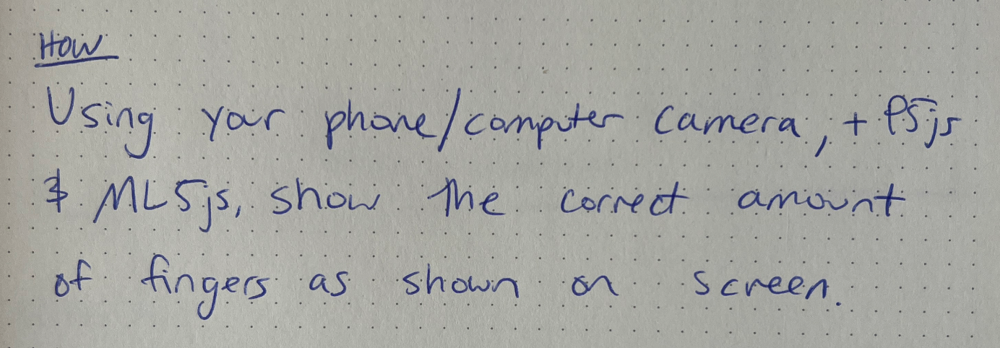
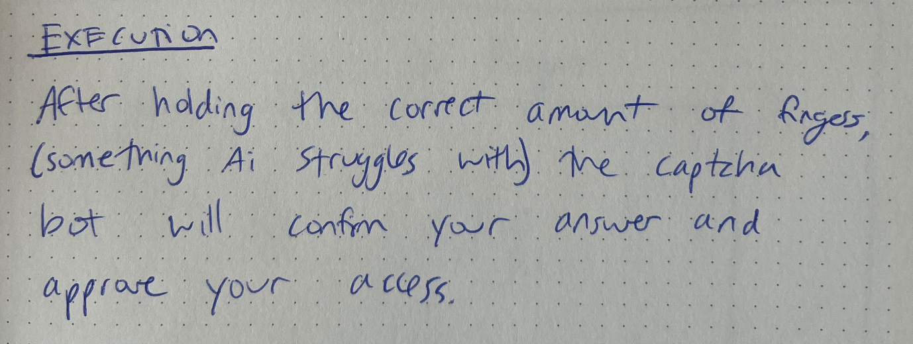
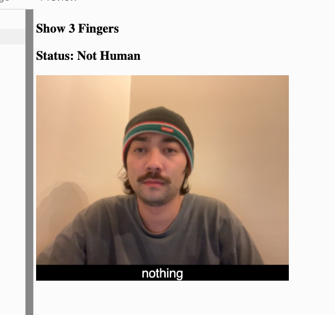
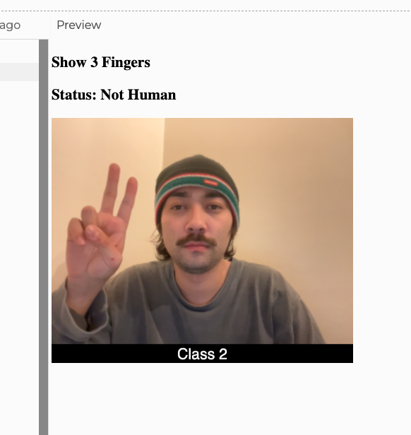
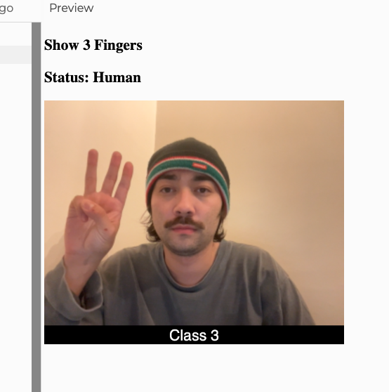

My idea for this project is to create a new type of captcha bot that requires you to show the correct amount of fingers to verify you're human.
 Here's the link to my final. Was able to successfull have the ai recognize how many fingers I'm holding up and verify I am "human"
https://editor.p5js.org/wyatt-3/sketches/S3B-C_Pgh
  